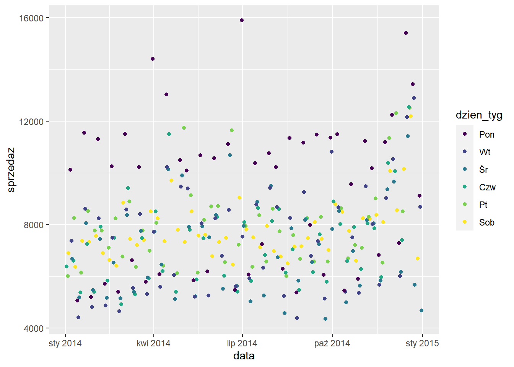

4 Wizualizacja danych
4.1 Wprowadzenie
Przewodnik po wizualizacji danych
Fundamentals of Data Visualization
Będziemy działać na zbiorze dotyczącym sprzedaży w sklepach: rossmann.xlsx i rossmann.RData.
library(tidyverse)
# library(readxl)
#
# rossmann <- read_xlsx("data/rossmann.xlsx")
#
# save(rossmann, file="data/rossmann.RData")
# natywny format, mniejszy rozmiar, szybsze wczytywanie
load("data/rossmann.RData")
sklep77 <- rossmann %>%
filter(sklep_id==77, czy_otwarty=="Tak")Do prostych wykresów można wykorzystać wbudowaną funkcję plot.
plot(sklep77$sprzedaz, sklep77$liczba_klientow,
xlab = "Sprzedaż", ylab = "Liczba klientów",
main = "Sprzedaż i liczba klientów w sklepie Rossmann nr 77")Jej możliwości są jednak ograniczone i stworzenie bardziej zaawansowanych grafik będzie wymagające.
Wiodącym pakietem do wizualizacji danych w R jest ggplot2:
- dokumentacja: https://ggplot2.tidyverse.org/
- cheatsheet
- tworzenie wykresów poprzez dodawanie (
+) kolejnych warstw
4.2 Wykres punktowy
Ten sam wykres co wcześniej, ale z wykorzystaniem pakietu ggplot2.

Wykonanie krok po kroku:
- Utworzenie siatki - określenie co chcemy na wykresie przedstawić
W zależności od typu wykresu w funkcji aes mogą znaleźć się argumenty:
- x
- y
- fill
- size
- color
- shape
- Określenie w jaki sposób chcemy te dane przedstawić - funkcja zawsze zaczyna się od
geom_:
- Edytowanie etykiet osi - funkcje
xlabiylab:
ggplot(data = sklep77, aes(x=sprzedaz, y=liczba_klientow)) +
geom_point() +
xlab("Sprzedaż") +
ylab("Liczba klientów")
- Dodanie tytułu - funkcja
ggtitle
ggplot(data = sklep77, aes(x=sprzedaz, y=liczba_klientow)) +
geom_point() +
xlab("Sprzedaż") +
ylab("Liczba klientów") +
ggtitle("Sprzedaż i liczba klientów w sklepie Rossmann nr 77")- Zmiana motywu - funkcja rozpoczynająca się od
theme_:
ggplot(data = sklep77, aes(x=sprzedaz, y=liczba_klientow)) +
geom_point() +
xlab("Sprzedaż") +
ylab("Liczba klientów") +
ggtitle("Sprzedaż i liczba klientów w sklepie Rossmann nr 77") +
theme_light()
Dostępne motywy:
- theme_bw
- theme_classic
- theme_dark
- theme_gray
- theme_light
- theme_linedraw
- theme_minimal
- theme_void
Powyższe motywy są zaimplementowane w pakiecie ggplot2, ale można także skorzystać z dodatkowych pakietów:
Albo stworzyć swój własny motyw.
Zadanie
Zmień motyw wykresu na wybrany przez siebie.
Dodamy teraz do wykresu kolejną cechę - rozpoczęcie promocji, żeby sprawdzić czy istnieje jakaś tendencja.
ggplot(data = sklep77, aes(x=sprzedaz, y=liczba_klientow, color=czy_promocja)) +
geom_point() +
xlab("Sprzedaż") +
ylab("Liczba klientów") +
ggtitle("Sprzedaż i liczba klientów w sklepie Rossmann nr 77") +
theme_light()
Okazuje się dosyć interesująco, niemniej nazwa etykiety legendy nie wygląda zbyt dobrze. Żeby to poprawić musimy użyć funkcji scale_
ggplot(data = sklep77, aes(x=sprzedaz, y=liczba_klientow, color=czy_promocja)) +
geom_point() +
xlab("Sprzedaż") +
ylab("Liczba klientów") +
scale_color_discrete(name = "Promocja") +
ggtitle("Sprzedaż i liczba klientów w sklepie Rossmann nr 77") +
theme_light()W funkcji scale_ musimy podać w jaki sposób daną cechę wizualizujemy (x/y/color/…) oraz jakiego jest typu. Oprócz nazwy w tej funkcji możemy określić wiele innych kwestii takich jak:
- wyświetlane etykiety
- początek i koniec osi
- kolory wariantów
- etykiety wariantów
ggplot(data = sklep77, aes(x=sprzedaz, y=liczba_klientow, color=czy_promocja)) +
geom_point() +
scale_x_continuous(name = "Sprzedaż") +
scale_y_continuous(name = "Liczba klientów") +
scale_color_discrete(name = "Promocja") +
ggtitle("Sprzedaż i liczba klientów w sklepie Rossmann nr 77") +
theme_light()
Zmiana pozycji legendy możliwa jest z wykorzystaniem funkcji theme:
ggplot(data = sklep77, aes(x=sprzedaz, y=liczba_klientow, color=czy_promocja)) +
geom_point() +
scale_x_continuous(name = "Sprzedaż") +
scale_y_continuous(name = "Liczba klientów") +
scale_color_discrete(name = "Promocja") +
ggtitle("Sprzedaż i liczba klientów w sklepie Rossmann nr 77") +
theme_light() +
theme(legend.position = "bottom")
ggplot(data = sklep77, aes(x=sprzedaz, y=liczba_klientow, color=czy_promocja)) +
geom_point() +
geom_smooth(method = "lm") +
scale_x_continuous(name = "Sprzedaż") +
scale_y_continuous(name = "Liczba klientów") +
scale_color_discrete(name = "Promocja") +
ggtitle("Sprzedaż i liczba klientów w sklepie Rossmann nr 77") +
theme_light() +
theme(legend.position = "bottom")## `geom_smooth()` using formula 'y ~ x'
4.3 Histogram
Rozkład cechy można ocenić na podstawie histogramu - domyślnie rysowanych jest 30 słupków.
## `stat_bin()` using `bins = 30`. Pick better value with `binwidth`.W funkcji geom_histogram można podać liczbę słupków (bins) albo ich szerokość (binwidth). Poniżej zastosowano słupki o szerokości 1000 euro.

Dodatkowo w tej funkcji można określić kwestie estetyczne - kolory obramowania i wypełnienia słupków.
ggplot(data = sklep77, aes(x=sprzedaz)) +
geom_histogram(binwidth = 500, color = "black", fill = "green")Pełna lista nazw kolorów znajduje się tutaj.
Z wykorzystaniem funkcji scale_ zmieniamy nazwy osi (name), granice (limits) oraz wskazania liczbowe (breaks). Te dwie ostatnie wartości musimy deklarować jako wektory z wykorzystaniem funkcji c().
ggplot(data = sklep77, aes(x=sprzedaz)) +
geom_histogram(binwidth = 500,
color = "black", fill = "green") +
scale_x_continuous(name = "Sprzedaż",
limits = c(4000,17000),
breaks = c(5000, 8000, 11000)) +
scale_y_continuous(name = "Liczebność",
limits = c(0,50))## Warning: Removed 2 rows containing missing values (geom_bar).Można zaumatyzować proces dobierania wskazań liczbowych z wykorzystaniem funkcji seq opisanej szerzej w rozdziale 2.1.2.
ggplot(data = sklep77, aes(x=sprzedaz)) +
geom_histogram(binwidth = 500,
color = "black", fill = "green") +
scale_x_continuous(name = "Sprzedaż",
limits = c(4000,17000),
breaks = seq(4000, 17000, 1500)) +
scale_y_continuous(name = "Liczebność",
limits = c(0,50))## Warning: Removed 2 rows containing missing values (geom_bar).4.4 Wykres pudełkowy
Wykres pudełkowy umożliwia porównywanie rozkładów cechy wg zmiennej grupującej. Wymogiem jest aby na osi x znajdowała się zmienna grupująca, a na osi y cecha analizowana.
Przeanalizujemy sprzedaż według kolejnych dni tygodnia.
## Warning: Continuous x aesthetic -- did you forget aes(group=...)?Zdecydowanie nie jest wykres jakiego oczekiwaliśmy. Wynika to z faktu, że dzień tygodnia w zbiorze danych jest zapisany jako zmienna numeryczna, natomiast prawidłowym typem dla zmiennej grupującej jest typ tekstowy lub czynnik (faktor). Ten typ danych został szczegółowo opisany w części 2.3.
Dokonujemy zatem zamiany typu danych:
sklep77 <- sklep77 %>%
mutate(dzien_tyg=factor(x = dzien_tyg,
levels = 1:6,
labels = c("Pon", "Wt", "Śr", "Czw", "Pt", "Sob"),
ordered = TRUE))
ggplot(sklep77, aes(x=dzien_tyg, y=sprzedaz)) +
geom_boxplot() Z tego wykresu można już odczytać, że najwyższa mediana sprzedaży występuje w poniedziałek, a najniższa w środę.
Jeżli kategorii jest dużo to można obrócić wykres z wykorzystaniem funkcji coord_flip.
Użycie tej funkcji powoduje wyłącznie obrócenie wykresu. Nazwy osi nie uległy zmianie pomimo, że zostały zamienione. Odwrócimy jeszcze kolejność etykiet dnia tygodnia, tak aby na górze był poniedziałek.
4.5 Wykres słupkowy
W zależności od typu danych wejściowych, wykres słupkowy można stworzyć na dwa sposoby:
- dane jednostkowe -
geom_bar- funkcja sama oblicza wartości do wyświetlenia, - dane zagregowane -
geom_col- funkcja otrzymuje już obliczone wartości.
Sprawdźmy ile jest sklepów o danym asortymencie. W tym celu potrzebujemy informację o sklepie i typie oferowanego asortymentu.
## Rows: 1,115
## Columns: 2
## $ sklep_id <dbl> 1, 2, 3, 4, 5, 6, 7, 8, 9, 10, 11, 12, 14, 15, 16, 17, ...
## $ sklep_asort <chr> "Podstawowy", "Podstawowy", "Podstawowy", "Rozszerzony"...W funkcji aes podajemy tylko kolumnę zawierającą dane do zliczenia.
Natomiast użycie funkcji geom_col wymaga samodzielnego obliczenia wartości:
## Rows: 3
## Columns: 2
## $ sklep_asort <chr> "Extra", "Podstawowy", "Rozszerzony"
## $ n <int> 9, 593, 513Wartość do wyświetlenia podajemy w funkcji aes w argumencie y.
Uporządkujemy etykiety osi x (obecnie są wyświetlane w kolejności alfabetycznej) tworząc czynnik.
rossmann_asort2 <- rossmann_asort2 %>%
mutate(sklep_asort=factor(x = sklep_asort,
levels = c("Podstawowy",
"Rozszerzony",
"Extra"),
ordered = T))
glimpse(rossmann_asort2)## Rows: 3
## Columns: 2
## $ sklep_asort <ord> Extra, Podstawowy, Rozszerzony
## $ n <int> 9, 593, 513Do wykresu słupkowego możemy dodać jeszcze jedną zmienną. W tym przypadku będzie to typ sklepu.
rossmann_asort3 <- rossmann %>%
select(sklep_id, sklep_asort, sklep_typ) %>%
distinct() %>%
count(sklep_asort, sklep_typ) %>%
mutate(sklep_asort=factor(x = sklep_asort,
levels = c("Podstawowy",
"Rozszerzony",
"Extra"),
ordered = T))
glimpse(rossmann_asort3)## Rows: 9
## Columns: 3
## $ sklep_asort <ord> Extra, Podstawowy, Podstawowy, Podstawowy, Podstawowy, ...
## $ sklep_typ <chr> "b", "a", "b", "c", "d", "a", "b", "c", "d"
## $ n <int> 9, 381, 7, 77, 128, 221, 1, 71, 220Uwzględnienie kolejnej zmiennej jest możliwe jako argument fill w funkcji aes.
Domyślnie kategorie są układane jedna na drugą - stack. Można je ułożyć obok siebie dodając argument position = "dodge" w funkcji geom_col.
Możemy jeszcze dodać etykiety słupków wykorzystując funkcję geom_text, w której trzeba podać argumenty definujące położenie wartości etykiet. Wartości tych argumentów będą zależały od typu wykresu.
ggplot(rossmann_asort3, aes(x=sklep_asort, y=n, fill=sklep_typ)) +
geom_col(position = "dodge") +
geom_text(aes(label = n),
position = position_dodge(width = 0.9),
vjust = -0.3)Zmienimy jeszcze nazwę legendy za pomocą funkcji scale_fill_discrete. Wykorzystujemy tę konkretną funkcję ze względu na to, że typ sklepu jest argumentem fill w funkcji aes oraz cechą jakościową (discrete).
4.6 Wykres kafelkowy
Do wizualizacji tabeli częstości można użyć wykresu kafelkowego. W tym celu najpierw zliczamy wystąpienia wariantów cech czy_promocja oraz czy_swieto_szkolne i wynik przekazujemy bezpośrednio do funkcji ggplot().
sklep77 %>%
count(czy_promocja, czy_swieto_szkolne) %>%
ggplot(aes(x = czy_promocja,
y = czy_swieto_szkolne,
fill = n)) +
geom_tile()Aby dodać do tego wykresu etykiety posłużymy się funkcją geom_label()
sklep77 %>%
count(czy_promocja, czy_swieto_szkolne) %>%
ggplot(aes(x = czy_promocja,
y = czy_swieto_szkolne,
fill = n)) +
geom_tile() +
geom_label(aes(label = n), color = "white")Zwykle patrząc na wykres podświadomie zakładamy, że ciemniejszy kolor oznacza wyższe wartości, natomiast jasny małe liczby. W tym przypadku układ kolorów jest odwrócony. Musimy odpowiednio dobrać kolory, aby to poprawić. Bardzo przydatne narzędzie znajduje się pod adresem: http://colorbrewer2.org/. Następnie korzystamy z funkcji scale_fill_gradient, w której określamy tylko kolor początkowy i końcowy.
4.7 Uwzględnienie czasu
Próba stworzenia wykresu przedstawiającego zmianę sprzedaży w czasie za pomocą oryginalnych danych spowoduje uzsykanie niezbyt czytelnej grafiki.
Wynika to z faktu, że dzien tygodnia jest traktowany jak zmienna numeryczna, a data jest zmienną tekstową. Konwersja tekstu na datę jest możliwa z wykorzystaniem pakietu lubridate. W tym pakiecie każda część daty ma swój akronim, który później jest wykorzystywany w odpowiednich funkcjach:
- y - rok (year)
- m - miesiąc (month)
- d - dzień (day)
- h - godzina (hour)
- m - minuta (minute)
Przykłady funkcji:
- ymd - konwertuje tekst zapisany w postaci rok-miesiąc-dzień na obiekt daty
- dmy_hm - konwertuje tekst zapisany w postaci dzień-miesiąc-rok godzina:minuta na obiekt daty
- month - pobiera z obiektu daty informację o miesiącu
- year - pobiera z obiektu daty informację o roku
- week - pobiera z obiektu daty informację o tygodniu roku
Według powyższych reguł korzystamy z funkcji ymd() do konwersji daty w naszym zbiorze.
library(lubridate)
sklep77a <- sklep77 %>%
mutate(dzien_tyg=as.factor(dzien_tyg),
data=ymd(data))
ggplot(sklep77a, aes(x=data,
y=sprzedaz,
color=dzien_tyg)) +
geom_point()
4.8 Facets
sr_sprzedaz <- rossmann %>%
filter(sprzedaz > 0) %>%
group_by(sklep_id, sklep_asort) %>%
summarise(sprzedaz_sr=mean(sprzedaz))## `summarise()` regrouping output by 'sklep_id' (override with `.groups` argument)odleglosc <- rossmann %>%
select(sklep_id, sklep_konkurencja) %>%
distinct()
sprzedaz_odleglosc <- inner_join(sr_sprzedaz, odleglosc, by="sklep_id")
ggplot(sprzedaz_odleglosc, aes(x=sprzedaz_sr, y=sklep_konkurencja)) +
geom_point() +
facet_wrap(~ sklep_asort)## Warning: Removed 3 rows containing missing values (geom_point).sr_sprzedaz_prom <- rossmann %>%
filter(sprzedaz > 0) %>%
group_by(sklep_id, czy_promocja) %>%
summarise(sprzedaz_sr=mean(sprzedaz))## `summarise()` regrouping output by 'sklep_id' (override with `.groups` argument)## Joining, by = "sklep_id"## # A tibble: 6 x 4
## # Groups: sklep_id [3]
## sklep_id czy_promocja sprzedaz_sr sklep_konkurencja
## <dbl> <chr> <dbl> <dbl>
## 1 1 Nie 4288. 1270
## 2 1 Tak 5274. 1270
## 3 2 Nie 3902. 570
## 4 2 Tak 6295. 570
## 5 3 Nie 5286. 14130
## 6 3 Tak 8790. 14130ggplot(sprzedaz_prom_odl, aes(x=sprzedaz_sr, y=sklep_konkurencja, color=czy_promocja)) +
geom_point()## Warning: Removed 6 rows containing missing values (geom_point).Zamiana reprezentacji danych na szeroką.
sprzedaz_prom_odl_wide <- sprzedaz_prom_odl %>%
spread(czy_promocja, sprzedaz_sr)
head(sprzedaz_prom_odl_wide)## # A tibble: 6 x 4
## # Groups: sklep_id [6]
## sklep_id sklep_konkurencja Nie Tak
## <dbl> <dbl> <dbl> <dbl>
## 1 1 1270 4288. 5274.
## 2 2 570 3902. 6295.
## 3 3 14130 5286. 8790.
## 4 4 620 9030. 10686.
## 5 5 29910 3473. 6084.
## 6 6 310 4189. 6295.I na wąską.
sprzedaz_prom_odl_long <- sprzedaz_prom_odl_wide %>%
gather(czy_promocja, sprzedaz_sr, Nie, Tak)
head(sprzedaz_prom_odl_long)## # A tibble: 6 x 4
## # Groups: sklep_id [6]
## sklep_id sklep_konkurencja czy_promocja sprzedaz_sr
## <dbl> <dbl> <chr> <dbl>
## 1 1 1270 Nie 4288.
## 2 2 570 Nie 3902.
## 3 3 14130 Nie 5286.
## 4 4 620 Nie 9030.
## 5 5 29910 Nie 3473.
## 6 6 310 Nie 4189.4.9 Wykres interaktywny
Za pomocą pakietu plotly w prosty sposób można zamienić statystyczny wykres ggplot na interaktywny.
library(plotly)
p <- ggplot(data = sklep77, aes(x=sprzedaz, y=liczba_klientow, color=czy_promocja)) +
geom_point() +
scale_x_continuous(name = "Sprzedaż") +
scale_y_continuous(name = "Liczba klientów") +
scale_color_discrete(name = "Promocja") +
ggtitle("Sprzedaż i liczba klientów w sklepie Rossmann nr 77") +
theme_light() +
theme(legend.position = "bottom")
plotly::ggplotly(p)Zadanie
Stwórz trzy grafiki dla danych dotyczących filmów.
## title genre director year
## Length:2961 Length:2961 Length:2961 Min. :1920
## Class :character Class :character Class :character 1st Qu.:1999
## Mode :character Mode :character Mode :character Median :2004
## Mean :2003
## 3rd Qu.:2010
## Max. :2016
## duration gross budget cast_facebook_likes
## Min. : 37.0 Min. : 703 Min. : 218 Min. : 0
## 1st Qu.: 95.0 1st Qu.: 12276810 1st Qu.: 11000000 1st Qu.: 2241
## Median :106.0 Median : 34703228 Median : 26000000 Median : 4604
## Mean :109.6 Mean : 58090401 Mean : 40619384 Mean : 12394
## 3rd Qu.:119.0 3rd Qu.: 75590286 3rd Qu.: 55000000 3rd Qu.: 16926
## Max. :330.0 Max. :760505847 Max. :300000000 Max. :656730
## votes reviews rating
## Min. : 5 Min. : 2.0 Min. :1.600
## 1st Qu.: 19918 1st Qu.: 199.0 1st Qu.:5.800
## Median : 55749 Median : 364.0 Median :6.500
## Mean : 109308 Mean : 503.3 Mean :6.389
## 3rd Qu.: 133348 3rd Qu.: 631.0 3rd Qu.:7.100
## Max. :1689764 Max. :5312.0 Max. :9.300Z racji mnogości gatunków można ograniczyć się do kilku wybranych.